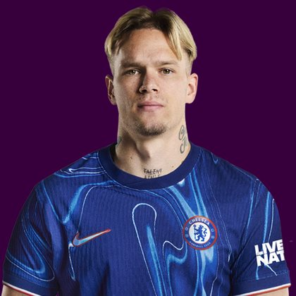

PITCHKEEP
Premier League · FPL · The Pitch
Player File · MID CHE

Mykhailo Mudryk
MID · Chelsea · age 25 · £5.5m
FPL ££5.5m
Owned0.0%
Sel. rank#513
Pitch avg168.0
# Boards3
BK Value112
Spread149–179
EP next2.0
The Pitch#225BK 112
Midfield#104BK 951
Tape · 2025/26 Premier League
Mykhailo Mudryk vs Juventus | Chelsea 0-1 Juventus Friendly match 2026 Epl
Every Board
Spread 149–179 · 3 sources
| Source | Rank |
|---|---|
| FPL Price Board | 149 |
| FPL EP Next | 176 |
| FPL Form | 179 |
On The Pitch nearby — Omar Marmoush (#223) · Gustavo Hamer (#224) · Saša Lukić (#226) · Andrés García (#227)